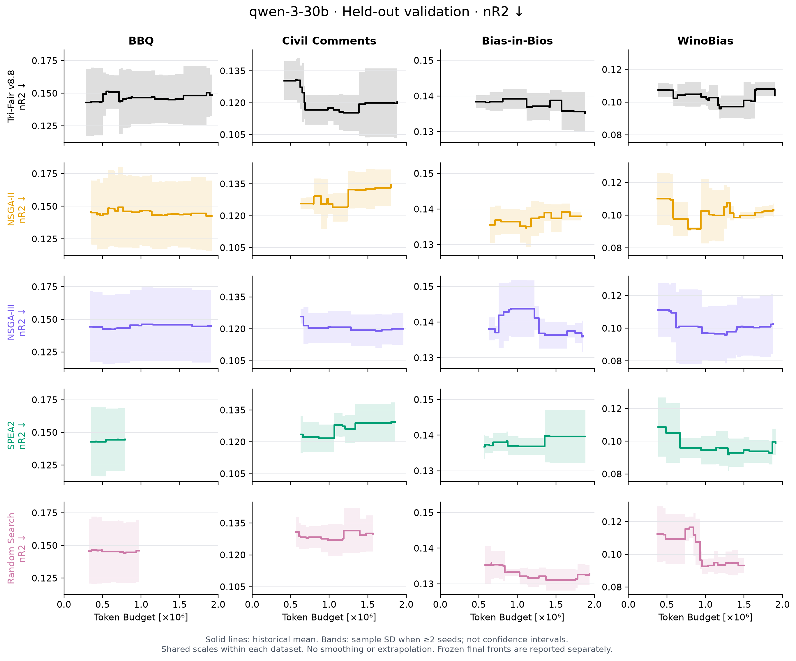
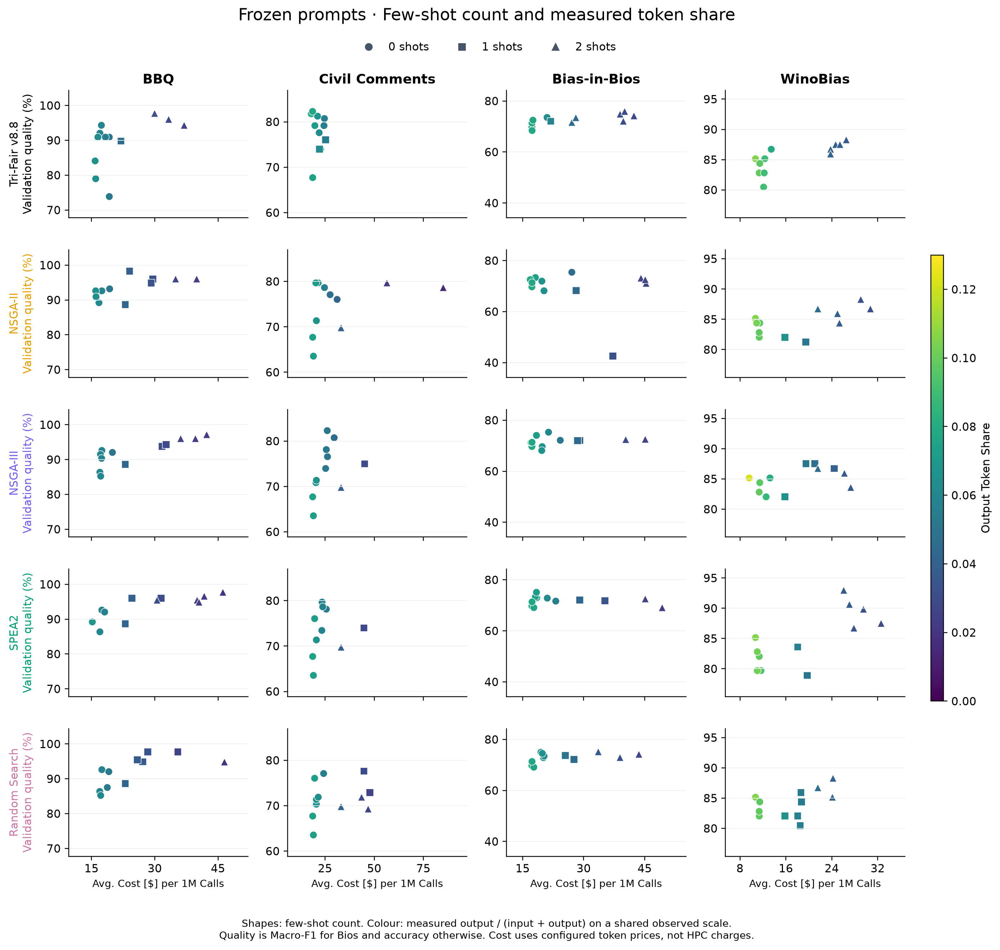

Research implementation review · 20 October 2026
Fix the budget failures first.
Test adaptive editing next.
This is an experimental v8.9 upgrade, not measured evidence of better Qwen performance. It fixes verified proposal-admission failures for every method, adds an isolated Tri-Fair strategy-selection change, and provides readable plots of existing data. Run the seed72 screening before further seeds or a 5M experiment.
1. What caused the severe budget under-use?
| Observed run | Verified evidence | What changes |
|---|
| SPEA2 · BBQ · seed74 | 795,024 / 2,000,000 tokens (39.7512%). The idle watchdog stopped after three consecutive steps without new downstream evaluation. The controller recorded no budget rejection. Reserve reclamation did not resume an idle-stopped run. | Cached candidates are detected before evaluation. The generator receives bounded retries with a reproducible advancing meta-seed stream. Retries call the same baseline generator and retain its selection rules. |
| Random Search · BBQ · seed74 | 973,616 tokens (48.6808%); 1,026,384 remained. The reported next-operation estimate was 0, with no trimmed candidates or rejected calls. The old full-evaluation step mistook an empty proposal list for budget exhaustion. | Empty proposals have their own status. They trigger retries; they cannot be reported as a zero-estimate token-budget exhaustion. |
| Other near-cap stops | A complete candidate may legitimately cost more than the remainder. An expensive first proposal previously blocked later candidates. | Check all proposed candidates for affordability. Retry the original generator when none fit. Never fabricate expenditure or make redundant calls solely to reach 100%. |
The historical SPEA2 archive does not establish whether every idle step came from a duplicate, parsing failure or another empty-output path. The new proposal_admission.jsonl records empty, cached, unaffordable and admitted outcomes. A retry limit is reported honestly; it does not prove that no possible prompt could fit.
2. Is MO-CAPO intensification active?
No: v8.8 and this v8.9 variant use complete search-set evaluation before survival. In NSGA2PromptOptimizer._step, the full-evaluation override replaces the inherited MO-CAPO step. Class inheritance alone does not mean intensification is being executed. The v8.9 shared step also uses full coverage.
| Mechanism | Tri-Fair v8.8 | Tri-Fair v8.9 | Four baselines in new pilot |
|---|
| Quality, token-price cost and unfairness objectives | Yes | Yes | Yes, unchanged |
| Complete search coverage before survival | Yes | Yes | Yes |
| Prediction cache and final search shortlist | Yes | Yes | Yes |
| Reserve reclamation | Shared policy | Shared policy | Shared policy |
| Novel/affordable proposal retries | No shared recovery | New shared protocol | Same new protocol |
| MO-CAPO progressive blocks, nearest-incumbent rejection and incumbent advancement | Not active | Not active | Not active |
| Measured parent archive and rendered demo edits | Tri-Fair-specific | Retained | Original baseline operators |
| Adaptive strategy credit and complementary-parent arm | Fixed edit cycle | New | Not added |
NSGA-II, NSGA-III and SPEA2 already share objective-aware prompt mutation, including fairness feedback. Random Search uses independent LLM proposals from a frozen seed-instruction pool, with elitist retention. These are explicitly adapted prompt-search baselines, not untouched numerical-optimization implementations.
MO-CAPO's central algorithmic distinction is progressive allocation of evaluation effort. It cannot simply be appended as a paper algorithm while the executable method performs full evaluation. Fairness metrics here are nonlinear group statistics: averaging block fairness values or pruning before adequate group support can change the objective. This upgrade keeps full coverage and targets verified failures rather than introducing an unvalidated racing rule.
3. What is new only in Tri-Fair?
Five proposal strategies replace the fixed six-mode cycle: targeted repair, fairness repair, complementary recombination, compression and demonstration variation. After initial exposure, a Thompson-style selector with 15% explicit exploration chooses strategies using measured search outcomes. The bounded parent archive, actual demo rendering, parsing checks, output contract and repeatability gate remain.
Strategy credit requires a positive exclusive hypervolume contribution relative to the pre-evaluation, bounded search archive. Credit is discounted when the candidate's measured downstream counter delta exceeds 100K tokens. A fairness-labelled edit additionally needs lower measured unfairness and no more than 0.02 loss of quality. Supported leave-one-block checks discount inconsistent fairness repairs. Fewer than three usable checks produce a missing consistency estimate; no zero-valued stability evidence is invented.
This is a heuristic adaptation of strategy selection for a changing multi-objective archive. Fractional Beta updates are not calibrated posterior probabilities, and the correlated leave-one-block checks are not confidence intervals. Strategy credit affects future proposals; it does not alter reported objectives or conceal unsuccessful candidates.
Repair requests include cached mistakes and successful controls with the same true label. For binary tasks, feedback covers both sides of the decision boundary when available. Recombination selects another measured parent whose cached correct predictions complement the first parent's errors. It asks for a compact merged decision rule rather than concatenating prompts. Compression must actually reduce rendered tokens.
operator_outcomes.jsonl contains every measured edit outcome, not only the last 16 edits. It records parent/child identity, objective differences, actual evaluation tokens, HV contribution, supported fold count, reward and survival. Validation and test cases never enter these operators.
Algorithm: Adaptive full-coverage Tri-Fair v8.9
Require: frozen search data and few-shot pool, initial instructions, meta/evaluation LLMs, strict token cap, population size, original fairness-support requirements.
- Render the initial population; run the repeatability gate; evaluate all search rows.
- Initialize the measured parent archive and five strategy states.
- While the shared step limit and downstream cap permit meaningful work:
- Select a strategy with exploration and measured strategy credit.
- Choose a measured parent; retrieve cached errors and successful controls.
- For recombination, choose a complementary measured donor.
- Generate a bounded edit or a valid demonstration variation.
- Reject invalid, cached or duplicate proposals; retry within the shared limit.
- Admit only a candidate whose complete missing search predictions fit.
- Evaluate every search row and require the original fairness readiness.
- Apply NSGA-II survival; retain the measured parent archive.
- Record all objective changes; update strategy credit from actual outcomes.
- Reclaim the shared reserve when eligible; freeze the final search-selected shortlist.
- Evaluate the frozen prompts on held-out validation in a separate stage.
4. Research reviewed and what was adopted
| Source | Relevant idea and implementation decision |
|---|
| MO-CAPO, 2026 · code | Reviewed the full-evaluation baseline and progressive intensification code. Shared caching and complete final assessment are retained. No claim of reproducing MO-CAPO racing in v8.9. |
| OPTS, 2025 · code | Explicit strategy selection replaces an implicit or fixed strategy schedule. The original single-score reward is replaced by an openly documented cost-discounted multi-objective contribution signal. |
| EvoPrompt, ICLR 2024 · code | LLM-based recombination motivates an optional proposal arm. Its donor uses cached complementary successes. This is not the complete EvoPrompt-DE algorithm. |
| scb-10x APO and ProTeGi/APO, 2023 | Use observed errors to propose edits while retaining successful controls. No new API, trained reward model, agent pipeline or external implementation was copied. |
| CLIP Prompt Optimization, 2026 | Publisher abstract inspected; full chapter was not accessible. Its vision-language similarity setup does not directly justify replacing this study's classification/fairness objectives or increasing the population. |
| Automatic Prompt Optimization overview | Used for background and primary-source navigation. Technical choices above are grounded in the primary papers and inspected code. |
Exact inspected repository revisions and scope are in research_sources.json. The four primary references are supplied in research/references_v89.bib.
5. Figures: separate panels, solid lines
The new renderer uses one method per row and one dataset per column, with common scales within a dataset. It removes overlaid endpoint symbols and dotted method trajectories. Historical mean curves remain unsmoothed staircases. Sample SD is shown only when multiple seeds have common observed support. Final audited fronts use labelled rows, separately from historical curves.
Few-shot plots use marker shapes for shot count, eliminating crowded number annotations. Viridis shows the true output-token fraction on one shared observed scale across all panels, explicitly labelled. Method colours remain black, orange, purple, green and pink. Cost is labelled Avg. Cost [$] per 1M Calls, and token axes use Token Budget [×10⁶].

Preview from the existing v8.8 60-run archive, not a prediction or measurement of v8.9 performance. PDF and SVG copies are included.

All saved final candidates are retained. Shape replaces overlapping shot-number labels; axes and colour bars retain actual units.
Figure inputs are measured_final_indicators.csv, measured_historical_trajectories.csv and fewshot_measured_points.csv. In your existing run they are under:
results/tri_fair_v88_three_seed_2000000/batch_20261020T085938_13348/
aggregate_validation/qwen-3-30b/paper_figures/
Regenerate the old data with the new layout without any GPU work:
python research/plot_v89.py \
--source-csv results/tri_fair_v88_three_seed_2000000/batch_20261020T085938_13348/aggregate_validation/qwen-3-30b/paper_figures \
--output-dir results/tri_fair_v88_three_seed_2000000/batch_20261020T085938_13348/aggregate_validation/qwen-3-30b/paper_figures_faceted
6. Apply locally, test, push, then pull on Rocket
This ZIP is an overlay for the current repository, based on commit 20b6641985b66715d1d256584a4821d0402f276b. It contains no Markdown or text files. Historical methods remain addressable for reproducing old outputs; only v8.9 is used as Tri-Fair in the new pilot. Existing results are not overwritten or deleted. Keep your current venv and package versions.
In PyCharm's PowerShell terminal, with earlier work committed:
cd C:\Users\maheshwari\PycharmProjects\Tri_Fair_V8_Clean
git pull --ff-only
if ($LASTEXITCODE -ne 0) { throw "Git pull failed; resolve before applying." }
Expand-Archive -LiteralPath "$HOME\Downloads\Tri_Fair_V89_Budget_Strategy_Figures_Upgrade.zip" -DestinationPath . -Force
.\.venv312\Scripts\python.exe tools\verify_v89_upgrade.py
if ($LASTEXITCODE -ne 0) { throw "Upgrade verification failed." }
.\.venv312\Scripts\python.exe -m pytest tests/test_v89_upgrade.py -q
if ($LASTEXITCODE -ne 0) { throw "Tests failed; do not push." }
git add -- src/tri_fair/config/registry.py src/tri_fair/config/study.py src/tri_fair/cli/pilot.py src/tri_fair/cli/pilot_v89.py src/tri_fair/optimizers/budget_fill.py src/tri_fair/optimizers/adaptive.py configs/v89_budget_fill.json jobs/submit_pilot_v89.sh jobs/pilot_v89.sbatch jobs/pilot_v89_report.sbatch research/run_pilot_v89.py research/plot_v89.py research/references_v89.bib tests/test_v89_upgrade.py tools/verify_v89_upgrade.py UPGRADE_V89.json review/v89
git diff --cached --stat
git commit -m "Fix matched budget filling and add adaptive Tri-Fair v8.9 pilot"
if ($LASTEXITCODE -ne 0) { throw "Commit failed." }
git push origin main
if ($LASTEXITCODE -ne 0) { throw "Push failed; do not pull on Rocket yet." }
Then on Rocket:
cd ~/Tri_Fair_V8
git pull --ff-only
source "$HOME/venvs/tri-fair-v8/bin/activate"
python tools/verify_v89_upgrade.py
unset NODELIST GPU_TYPE PILOT_GPU_TYPE PILOT_RESULTS_ROOT SEED SBATCH_NODELIST SBATCH_GPUS_PER_TASK
MODEL=qwen-3-30b PILOT_SEEDS=72 PILOT_BUDGET=2000000 \
MAX_CONCURRENT=5 DRY_RUN=1 bash jobs/submit_pilot_v89.sh
# Submit after the dry-run plan is correct:
MODEL=qwen-3-30b PILOT_SEEDS=72 PILOT_BUDGET=2000000 \
MAX_CONCURRENT=5 DRY_RUN=0 bash jobs/submit_pilot_v89.sh
Expected: 4 dataset tasks × 5 methods = 20 optimizer runs, then 4 held-out validation tasks and one CPU report. Five methods run sequentially inside each dataset task. Therefore seed72 alone can use at most four GPUs; %5 is a concurrency ceiling, not a request for an extra task. The allowed nodes remain Pegasus2, Firefly1–3 and Shepard2. Scheduling on several nodes is not guaranteed.
The new default results root is results/tri_fair_v89_matched_2000000/batch_.... Submission prints the three job IDs. Inspect them with:
sacct -X --array -j TRAIN_JOB,VALIDATION_JOB,REPORT_JOB \
--format=JobID,JobName,State,Elapsed,ExitCode
Replace the three placeholders. Do not change frozen source files while a batch is active. The runner refuses mixed source/package fingerprints and incompatible seed settings. A validation dependency waits for all requested training tasks.
7. What to inspect before spending more
| Question | Output relative to the new batch |
|---|
| Actual budget use, including meta-generation | aggregate_validation/qwen-3-30b/budget_utilization_all_runs.csv and budget_readiness.json |
| Held-out quality, cost, unfairness, HVopt, HVpes, nR2 | aggregate_validation/qwen-3-30b/front_indicators_per_seed.csv and front_indicators_summary.csv |
| Raw held-out evaluations | heldout_validation/qwen-3-30b/DATASET/seed72/eval_checkpoints_union.parquet |
| Why proposals did not consume budget | Each method's run/proposal_admission.jsonl, budget_summary.json and run_summary.json |
| Whether fairness edits really helped | Tri-Fair's run/operator_outcomes.jsonl and saved strategy states |
| Exact plotted values and layout provenance | aggregate_validation/qwen-3-30b/paper_figures/, containing the three measured CSVs and figure_provenance.json |
Exact 100% expenditure is neither guaranteed nor a scientific goal: the final complete candidate may not fit. The pilot reports a 90% utilization diagnostic and all actual expenditure. A proposal retry limit is kept distinct from a true observed affordability rejection. No extra repeated evaluations are added to make a budget bar look full.
The optimization cap applies to downstream inference. Meta tokens and a configured token-price estimate including meta-generation are separately reported. Deployment cost retains the study's existing mean raw task-input/output convention, which omits the default system string and serialized chat-template overhead. It is not an invoice or a complete physical GPU-cost measurement. Changing that objective would require a separately versioned, shared metric study.
Only if seed72 held-out fronts and utilization support further work should you freeze this configuration and run additional seeds. The launcher also supports PILOT_SEEDS=73,74 for a new batch. Do not casually merge different source hashes. The current helper deliberately rejects 5M; a final study should be explicitly frozen and reviewed separately.
Previously inspected validation results are development evidence. Keep the final test set sealed until the method and selection policy are fixed. One seed cannot establish significance; three seeds still provide limited evidence. Higher search HV, better utilization and more elaborate operators do not guarantee better held-out fairness.
8. Validation and scope
129 core/runner/reporting tests passed. The latest focused suite, including the added single-seed SD check, passed 35 tests. These suites overlap and must not be added as independent test counts. Final CPU validation details are supplied in validation/summary.json and validation/final_cpu_validation.xml. Tests cover the actual empty-proposal regression, all four baseline selectors, full-coverage token admission, cache-only retries, reserve reclamation, strategy credit, checkpoint restoration, public train runner and held-out reporting. No real Qwen GPU evaluation was performed here.
All twelve protected baseline/data/metric/finalization files pass their original integrity checks. The new protocol uses additive subclasses; only registration/profile/pilot plumbing changes in existing files. The original baseline proposal and selector bodies are byte-identical. A fresh five-method comparison is required because the shared execution protocol changed.